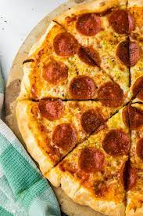

Pizza Recipe

Description
Pizza comes in many different shapes and sizes. Many of these shapes and sizes will vary immensly as you travel
from region to region. To keep things extremly simple we will show you how to make a simple pepperoni pizza
Ingredients
Sauce Ingredients
- 1/2 cup water
- 1/2(12 ounce) can CONTADINA Tomato Paste
- 1 teaspoon dried oregano, crushed
- 1 teaspoon dried basil, crushed
- 1/2 teaspoon garlic powder
- 1/2 teaspoon onion powder
- 1/2 teaspoon sugar
- 1/2 teaspoon salt
- 1/2 teaspoon black pepper
Crust Ingredients
- 3 1/4 cups all purpsoe flour, or more as needed
- 2(.25 ounce) envelopes FLEISCHMANS Pizza Crust Yeast or RapidRise Yeast
- 1 tablespoon sugar
- 1 1/2 teaspoon salt
- 1 1/3 cups very warm water (120 degrees F to 130 degrees F)
- 1/3 cup oil
Toppings Ingredients
- 1 cup shredded mozzarella cheese, or more to taste(how ever much you see fit)
- 1(6 ounce) package HORMEL Pepperoni
Steps
- Preheat the oven to 425 degrees F(220 C). Grease two 12-inch pizza pans.
- Make Sauce: Whisk together water, tomato paste, oregano, basil, garlic powder, onion powder, sugar, salt,
and pepper in a medium bowl until smooth. Set aside.
- Make Crust: Combine 2 cups flour, yeast, sugar, and salt in a large bowl. Add warm water and oil; mix until
well blended, about 1 minute. Gradually add remaining flour, a little at a time, until a soft, sticky dough
forms.
- Transfer dough to a floured surface; knead until dough is smooth and eltasic, about 4 minutes. Add more
flour as needed.(If using RapidRise yeast, let dough rest, coverd, for 10 minutes).
- Divide dough in half. Lightly flour your hands, then pat each piece of dough onto the prepared pizza pans.
- Top dough with sauce, cheese and pepperoni.
- Bake in the preheated oven until crusts are browned and cheese is bubbly, 18 to 20 minutes. Rotate pizza
pans between the top and bottom oven racks halfway through baking.
Click here to return back to the homepage